JSON Patch & Puppet future
Tomek Wytrębowicz


fast-json-patch
- All apps
- 475 stars, 85 forks
 36 depending
36 depending 29 depending
29 depending
Faster JSON-Patch duplex
- Remove browser dependencies (listeners, events, document)
- Dirty-checking -> Proxy
Benefits
- Performance
- More sync., simpler, flow
- x-platform
- Node.js/server-side compatible
- Starcounter x Node.js
- shared code on both ends
- wider community
- Easier tests
- Easier bug reports & tracking
- Server-side Puppet.js
PuppetJS
- Separate browser-related features
- More symmetric peer-to-peer
- n-to-n connections
Separate browser-related features
Benefits
- Simplified flow
- Performance
- Modularity
- Maintenance
- x-platform
- Node.js/server-side compatible
- wider community
- Easier tests
- Easier bug reports & tracking
- More symmetric peer-to-peer
More symmetric peer-to-peer
Benefits
- Shared code on both ends
- Starcounter x Node.js
- Better test-coverage
- Easier maintenance
- n-to-n connections
n-to-n connections
experiment
Benefits
- Collaborating
- Sharing view-model on multiple devices
- Wider non- adoption
- ..?..
New name for PuppetJS
as a protocol / communication library
- It does not have to be JS specific
- JSON is the thing common for many implementations
- conflict with Marionettejs (Backbone)
- conflict with Puppet - configuration menagement tool
- Does not adhere to p2p (w/o master & slave)
- Does not adhere to n-to-n flow
New name for PuppetJS
as a protocol / communication library- PuppetJSON
- JSONPuppeteer
- JSONPatcher
- JSONMirror / JSONMirrors
- ?
Thanks!
Tomek Wytrębowicz
tomalec
@tomalecpl
Repos:
fast-json-patch - github.com/Starcounter-Jack/JSON-Patch
PuppetJS - github.com/PuppetJs/PuppetJs/
This & other talks: